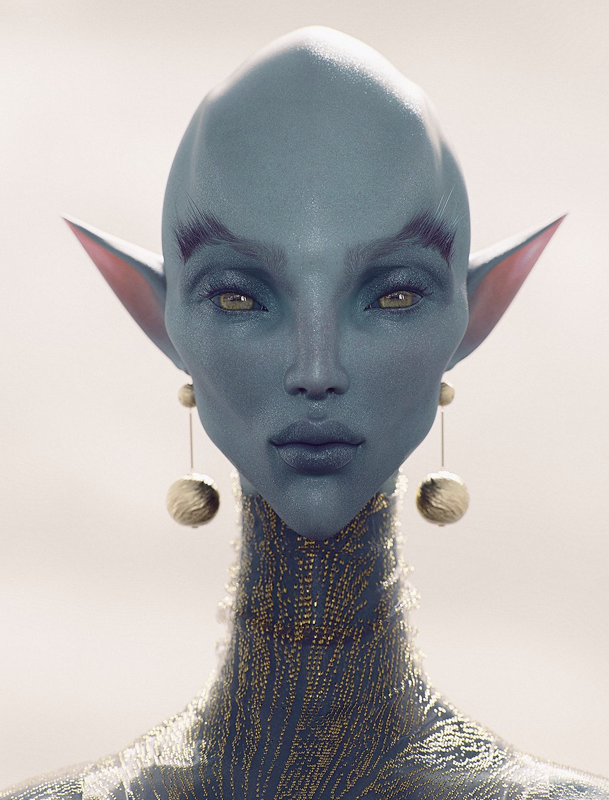
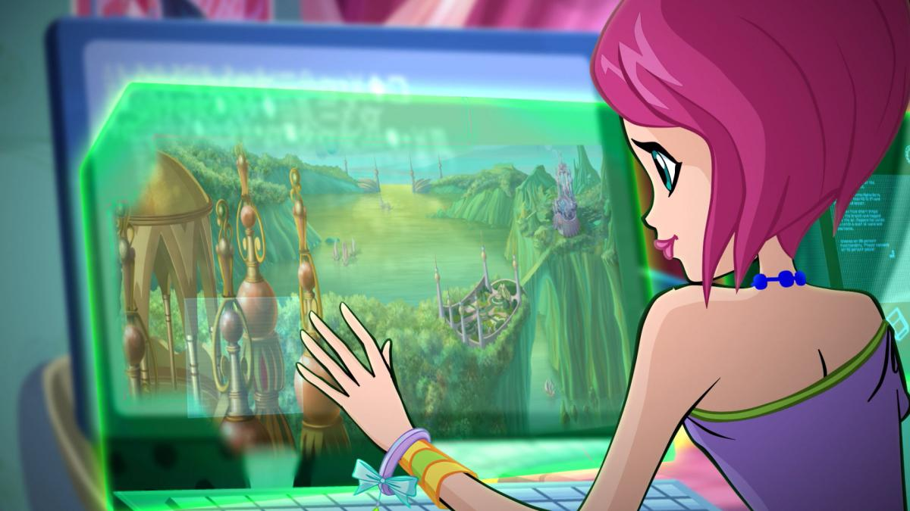
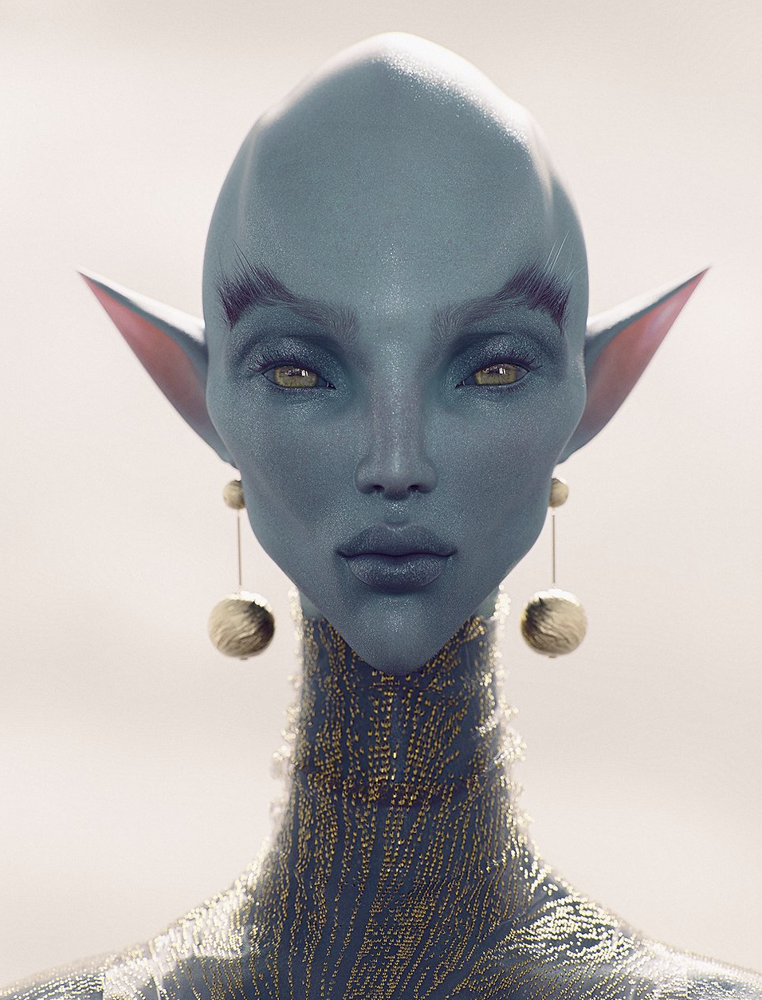
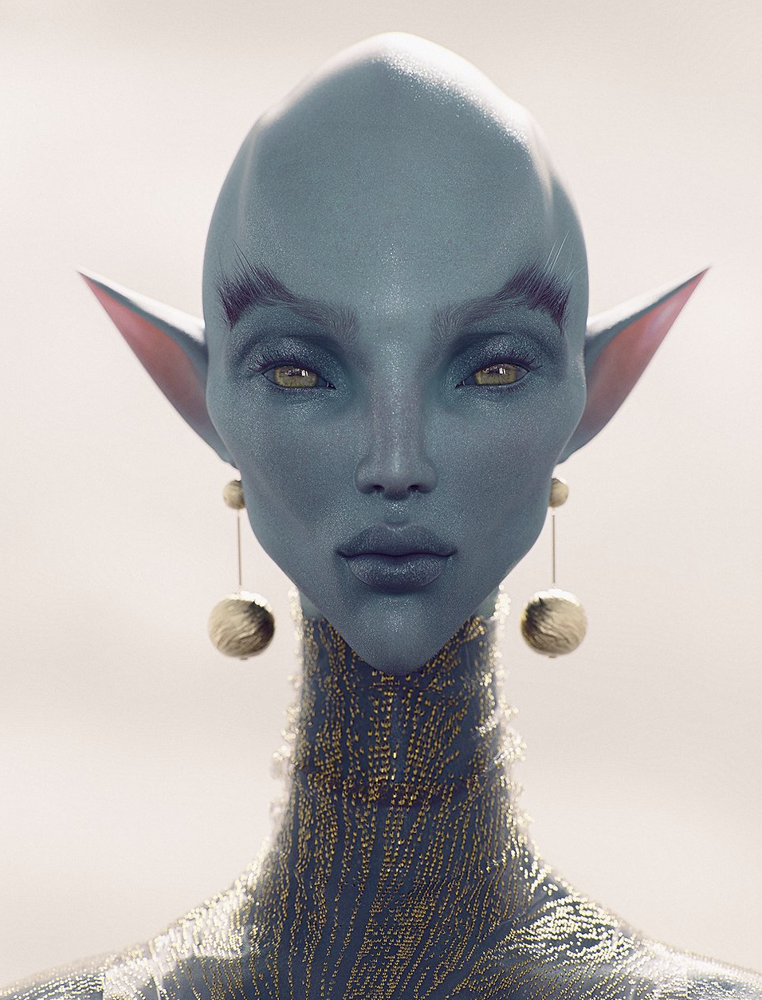

MuW201 Tangible Computing
Fatima_Alhalyan

INTRODUCTION TO WEBCAM FILTERS

The first webcam was created in the year 1999 as sort of a joke. When the British scientist Quentin Stafford-Fraser kept getting fed up, because each time he attempted to get a fresh coffee cup, the pot would be empty because all the other scientists at Cambridge university would get to the pot before he did. To solve this problem, Fraser wired a small camera to the staff’s computer network to view the coffee pot. In the year 1993, Cambridge University researchers decided to develop the coffee pot camera by uploading images from the camera to the internet. In the process, it created the world’s first webcam. This was accomplished by the development of MSRPC2, A remote procedure call system designed to run over multi-service network architecture. Meanwhile, in the year 1999, Nasa had created a hybrid synthetic vision system, which would allow pilots to have a clear view of the sky at all times of the day. However, that was not the start of such inventions, because Augmented reality began in the year 1968, with the first head-mounted AR display, by the scientist Ivan Sutherland’s, he called it “The Sword Of Damocles” and the device would computer generate graphics that would enhance the users perception of the world. The first fully functional augmented reality system was later invented in the year 1992, by Louis Rosenburg, a USAF Armstrong’s Researcher in the USA, the technologies that allowed Augmented Reality to exist are Hardware’s such as, head-mounted displays, sensors, processors, Input devices like speech recognition, gesture recognition systems and visual detection and software algorithms that take real-life information like coordinates and real-life images and use an Augogram to create the visuals for AR.
In today’s world, webcams and AR combine to create really cool visual environments and webcam filters, and the main players in this field are Snapchat, and Instagram, they are both social websites that allow millions of people to alter the way that they look through the use of filters, and change the way that their own surroundings look through the use of AR. And what’s really cool about these media is that it allows people from all over the world to create their own wacky filters and augmented reality creations. And these creative explorations can be shared across the globe and can be used by so many people. But filters and AR aren’t just specific to people who want to create funny filters on social media, but it is much more versatile. The Diigitals is a modeling agency that uses Virtual celebrities for modeling. This invention is possible using AR and filters. Their take is that the fashion industry produces far too much waste, and the way they create their work is sustainable. Companies like this open up a world of possibilities. I love that there are so many ways to use this tech, and I hope to use them to create a magical world combining fantastic fairytales and reality.
APPLICATIONS OF WEBCAM FILTERS AND AR IN FAIRYCORE.
1.The Diigitals: A modeling agency that uses 3d fashion modeling and heavy filters to create ethereal virtual models.

APPLICATIONS OF WEBCAM FILTERS AND AR IN FAIRYCORE.
1.The Diigitals: A modeling agency that uses 3d fashion modeling and heavy filters to create ethereal virtual models.
